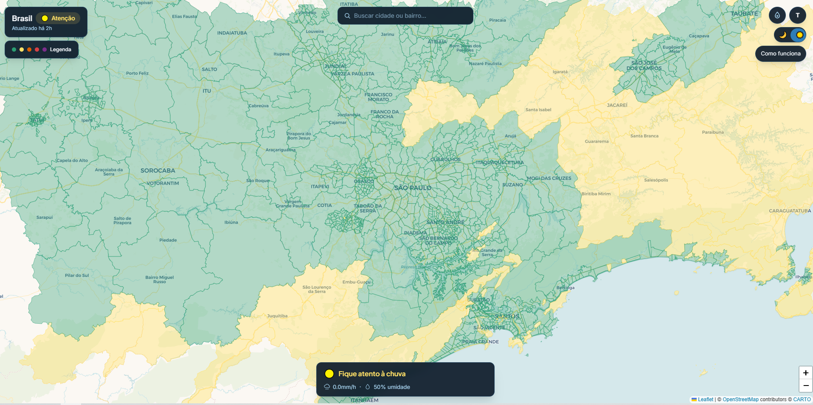
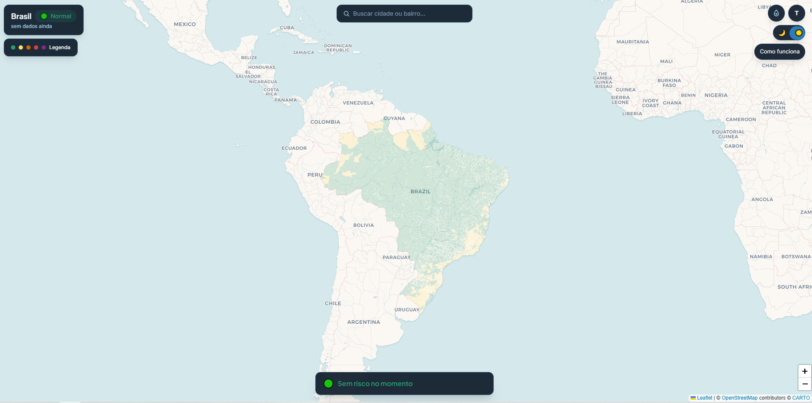
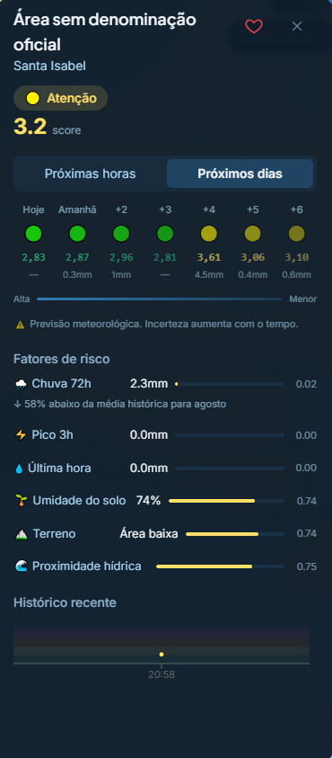

El mapa de riesgo que llega antes de la lluvia
Chuvarada cubre 28.483 barrios brasileños con datos hidrológicos en tiempo real — para que la evacuación ocurra antes, no después.
El problema
La alerta existe. La granularidad, no.
Brasil tiene sistemas de alerta meteorológica. Lo que no tiene es precisión de barrio: las alertas de la Defensa Civil se emiten por municipio — y alguien que vive en una ladera en Recife no sabe si el riesgo está en su calle o a tres barrios de distancia.
Lo que existe
CEMADEN emite alertas municipales. La Defensa Civil hace comunicados regionales. gov.br concentra los datos, pero no los traduce para quien está en el lugar.
Lo que falta
Granularidad de barrio, en tiempo real, accesible para cualquier persona desde el celular — sin login, sin instalación, sin jerga técnica.
barrios cubiertos
Con score de riesgo calculado cada hora, usando seis fuentes de datos públicos.
Principio de producto
Si el punto georreferenciado está mal, el score de riesgo también estará mal — y una alerta equivocada es peor que ninguna alerta.
El desafío técnico (que se convirtió en decisión de producto)
Brasil no tiene centroides de barrio
El problema no era falta de datos — era incompatibilidad de datos. Brasil organiza su administración por distritos, no por barrios. El Censo IBGE 2022 mapeó barrios pero sin centroides para geocodificación.
Sin centroide, no hay forma confiable de asociar un punto geográfico a un barrio con precisión. La solución estándar (centro geométrico del polígono) colocaría el punto representativo en áreas deshabitadas — cerros, ríos, terrenos vacíos.
La solución
Centroide ponderado por población usando los datos del Censo IBGE 2022. El punto representativo de cada barrio cae donde las personas realmente viven, no en el centro geométrico del polígono.
Por qué esto importa para el producto
Si el punto georreferenciado está mal, el score de riesgo de ese barrio también estará mal. Esta fue una decisión de producto disfrazada de problema técnico — y la más importante del proyecto.
La solución
Seis fuentes. Siete variables. Un número por barrio.
Chuvarada combina seis fuentes de datos públicos y gratuitos, actualizadas automáticamente, para calcular el riesgo de cada barrio cada hora.
| Fuente | Proveedor | Qué entrega |
|---|---|---|
| MERGE/CPTEC | INPE | Precipitación satelital + pluviómetros |
| Open-Meteo | Open-Meteo | Viento, humedad, presión, lluvia horaria, humedad del suelo |
| NASA SRTM | NASA | Altimetría del terreno (~30m de resolución) |
| ANA/BHO | Agencia Nacional de Aguas | Red hidrográfica nacional |
| Censo IBGE 2022 | IBGE | Malla de barrios de todo Brasil |
| TideCheck | UHSLC / FES2022 | Nivel de marea real (113 de 115 ciudades costeras) |
Cómo se calcula el score
Las siete variables se combinan con pesos definidos por la relevancia de cada una para el riesgo de inundación:
| Variable | Peso |
|---|---|
| Pico de lluvia (3h) | 22% |
| Lluvia 72h | 16% |
| Lluvia última hora | 15% |
| Pendiente del terreno | 14% |
| Humedad del suelo | 14% |
| Proximidad hídrica | 11% |
| Marea | 8% |
Resultado
Score de 1 a 10, recalculado cada hora, traducido en cinco niveles: Normal / Atención / Moderado / Alto / Crítico.
Reglas automáticas de escalamiento a Crítico
- i. Más de 50mm de lluvia en la última hora
- ii. Marea superior al 80% combinada con lluvia en zona costera
La interfaz
Del modelo a un mapa que cualquiera entiende
El modelo devuelve un número. El trabajo de la interfaz es volver ese número legible para quien está en una ladera, en el celular, sin inicio de sesión y sin jerga — y comunicar no solo el riesgo, sino el porqué.



La tarjeta del barrio es donde el diseño y el modelo se encuentran. En vez de esconder el cálculo, expone cada factor de riesgo con el peso que tuvo en la puntuación — humedad del suelo, terreno, proximidad hídrica, lluvia — y traduce el dato bruto a un lenguaje interpretable ("58% por debajo del promedio histórico para agosto"). Mostrar el razonamiento, en vez de entregar solo el veredicto, es lo que genera confianza en quien decide evacuar.
Puntuación + cinco niveles
Número (1–10) y color juntos: legible para quien lee por color y para quien compara por valor.
Línea de tiempo con incertidumbre
Próximas horas y días — y la interfaz avisa que el pronóstico pierde precisión con el tiempo.
Factores transparentes
Cada variable del modelo aparece con su contribución. El peso deja de ser un detalle técnico y se vuelve información para el usuario.
Guardar el barrio
Seguir dónde se vive, o dónde está la familia, sin cuenta — lo esencial en el celular, en el momento que importa.
Cómo se construyó
Seis fuentes, una puntuación por hora, una app sin tienda
Un producto de escala nacional, construido y mantenido por una persona. Lo que lo hace posible es una arquitectura ligera y desarrollo asistido por IA.
Stack
Next.js + TypeScript y Tailwind en la interfaz; Leaflet.js en la cartografía; Supabase como base de datos; despliegue continuo en Vercel; PWA instalable.
Pipeline
Cada hora, las seis fuentes públicas se consolidan y el modelo ponderado recalcula la puntuación de riesgo de los 28.483 barrios.
Método — Spec-Driven Development con IA
Construido en solitario con Spec-Driven Development y Claude Code: la especificación viene antes del código, y la IA acelera la implementación sin sacar las decisiones de diseño y de producto de mis manos. Es lo que permite que una persona lance — y mantenga — un producto de este tamaño.
Decisiones de producto
Lo que no hice — y por qué
La sección más importante del caso. Documentar lo que fue descartado y por qué es lo que diferencia el trabajo sénior del júnior.
Escala numérica, no semáforo
Verde/amarillo/rojo colapsa matices. Un score de 4,8 y uno de 7,2 parecen iguales en un semáforo, pero representan riesgos completamente diferentes. La escala 1–10 comunica tendencia y permite comparación histórica.
Humedad del suelo como variable (14%)
Es la variable más contraintuitiva — y la más importante en muchos escenarios. Lluvia ligera en suelo saturado genera más inundación que lluvia fuerte en suelo seco. Quitarla por ser difícil de explicar sería sacrificar precisión por simplicidad.
Barrio, no municipio
La granularidad municipal ya existe y no resuelve el problema. El producto solo tiene sentido si la respuesta es más precisa que lo que ya existe. El barrio es la propuesta de valor — sin ella, no hay producto.
Relatos de la comunidad como validación, no como fuente primaria
El dato satelital es preciso a escala — el relato humano es preciso a nivel local. Los dos se complementan: el modelo detecta el evento, el relato confirma dónde está impactando. Invertir esta jerarquía haría el sistema manipulable.
Limitaciones honestas publicadas en la plataforma
Sin datos de drenaje urbano (no existen como dato público en Brasil). Pesos sin calibración regional formal. São Paulo, Campinas y Sorocaba cubiertas por distritos, no barrios. Publicar las limitaciones no debilita el producto — aumenta la confianza de quienes toman decisiones basados en él.
Resultado
Producto en producción. Open source.
Cobertura
28.483 barrios cubiertos
Actualización
Score recalculado cada hora
Datos
6 fuentes de datos públicos integradas
Plataforma
PWA instalable — funciona como app, sin tienda
Accede al proyecto
Artículos publicados en Substack (PT) y Medium (EN).
Aprendizaje
El dato en tiempo real sin decisión de producto es ruido. Cada variable del modelo existe porque hay una pregunta real del usuario detrás — “¿está mi barrio en riesgo ahora?” — y la respuesta necesita llegar antes de que la pregunta se vuelva demasiado urgente.
El problema técnico más difícil del proyecto (los centroides de barrio) era, en realidad, un problema de producto. Si el punto geográfico está mal, el score estará mal — y una alerta equivocada es peor que ninguna alerta.